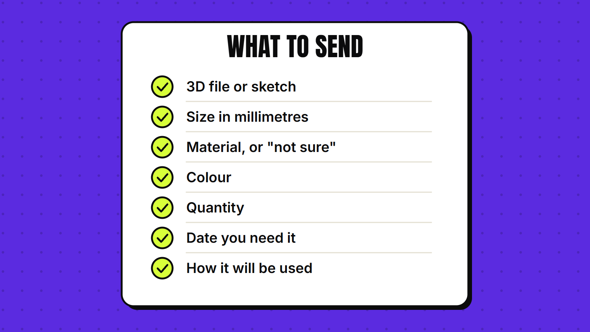
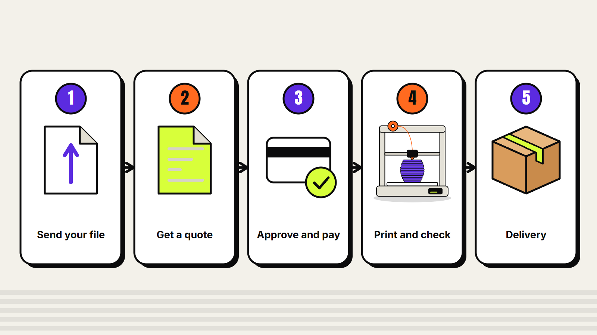

Ordering a custom print can feel unfamiliar the first time. There is no fixed price on a shelf, because every part differs in size, material, finish, and quantity. A clear process removes the guesswork. This guide explains what to prepare, how a quote works at Akrinity, and what happens between approval and delivery. The same questions are worth asking any print service.
A complete request gets a more accurate quote and fewer follow-up questions.

Fill in the quote form with your name and phone number, add your email so the quote can reach you, and attach the file. You will be asked to confirm that you have the right to print it. After sending, you receive a reference number. Keep it for any follow-up. If a large upload fails, the request is still saved, and you can try the upload again.
Your file is private. It is stored away from the public website, and it is not shown to other customers.
We look at whether the part will print well. That includes wall thickness, overhangs, fit, size, and whether the material suits the use. If a change would make the print more reliable, we tell you what it is and why. For design jobs, we build the model and send preview images, and you can ask for changes before anything is printed.
The quote gives the price and the lead time in working days. Check these points before you approve:
Ask questions at this stage. It is far easier to change a quote than a finished part.
Tip: For a batch, or a part that must fit something precisely, ask for one sample first. Approve the sample, then run the rest.
You pay only after you approve the quote. Use the approve link in the quote email, enter your delivery address, and pay online by UPI, card, or net banking. Custom, made-to-order, and personalised items cannot be ordered as cash on delivery, because they are made for one person and cannot be resold. Larger jobs may start with an advance, with the balance due before dispatch. Your quote states the terms.

Once payment is confirmed, the job goes into production. Each part is checked before packing. When it ships, you get an email with the delivery partner and tracking ID. Status updates for your quote also arrive by email, so you know where things stand without chasing.
| Factor | Why it matters |
|---|---|
| Size and volume | More material and more machine time |
| Material | Some cost more or need more care to print |
| Detail and finish | Fine layers, sanding, or painting add work |
| Supports and complexity | Extra material and cleaning |
| Colours | Multi-colour printing adds steps and waste |
| Quantity | Batches can share setup effort |
| Design work | Modelling or repairing a file is separate work |
A short, specific message works better than a long, vague one. Here is an example you can adapt:
"I need 6 wall brackets to hold a curtain rod 20 mm across. Each should be about 60 x 40 x 30 mm. They go indoors, near a sunny window. White if possible. STL attached. I would like them before the end of the month. Screw holes for 4 mm screws."
This tells the studio the quantity, size, load, setting, colour, deadline, and fit. The sunny window alone may change the material suggested.
Custom work is made for you, so changes after printing starts may not be possible, or may need a new quote. If a parcel arrives damaged, or the part does not match the approved quote, tell us as soon as you notice, with photos and your reference number. The full terms are on the returns page and the terms page.
For repeat batches, branded pieces, or spare parts, describe the expected volume and add your GSTIN. Where a product has bulk prices, they appear on its page, and you can send a bulk quote request from there. See business and bulk orders.
When you are ready, request a quote. If the file still needs work, start with preparing a 3D file.